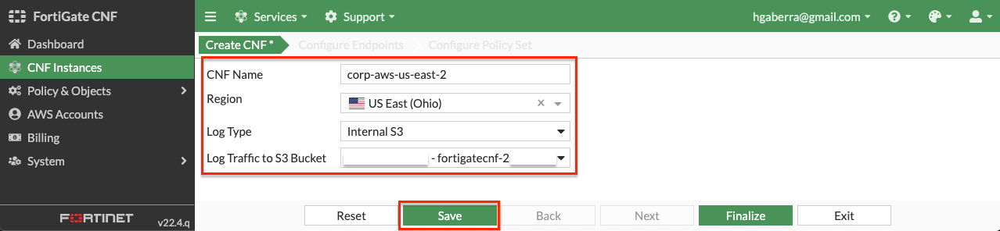
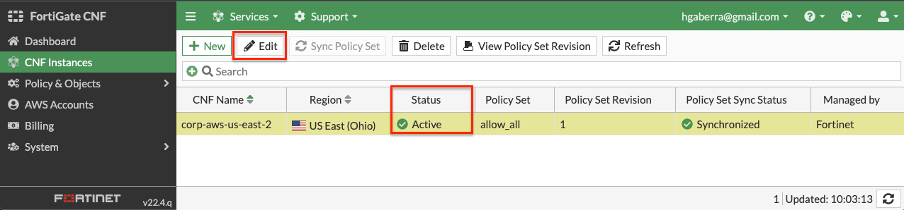
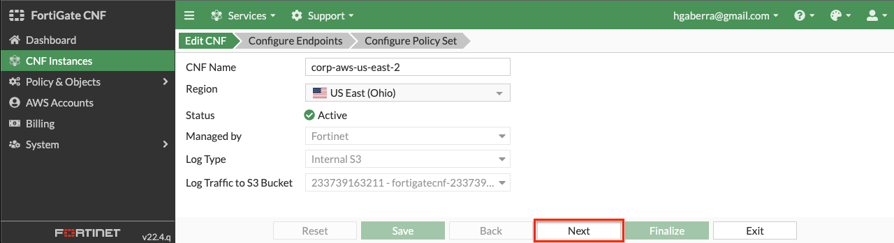
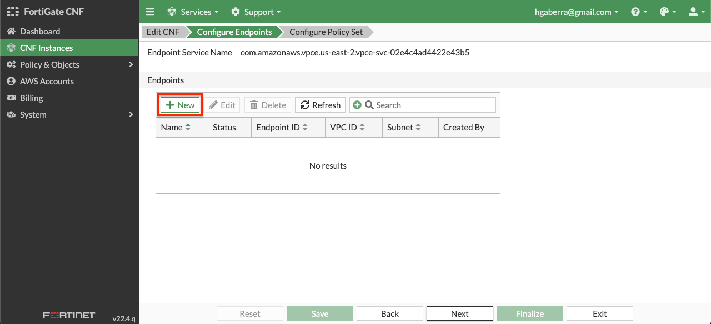
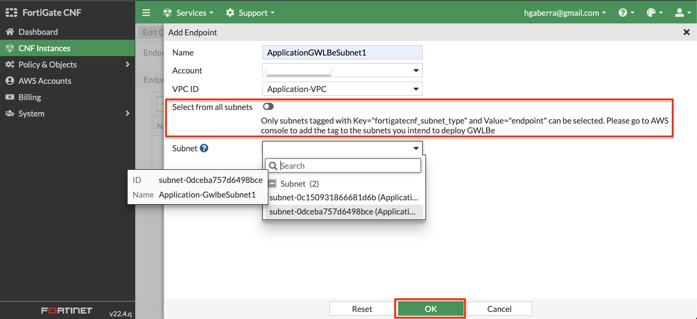
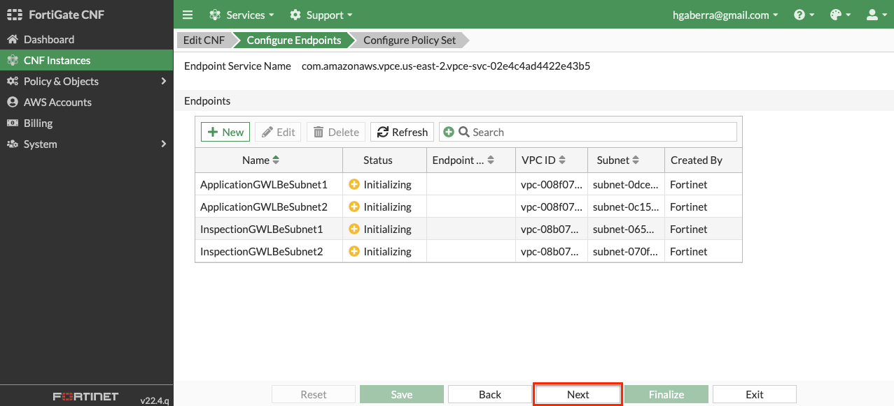
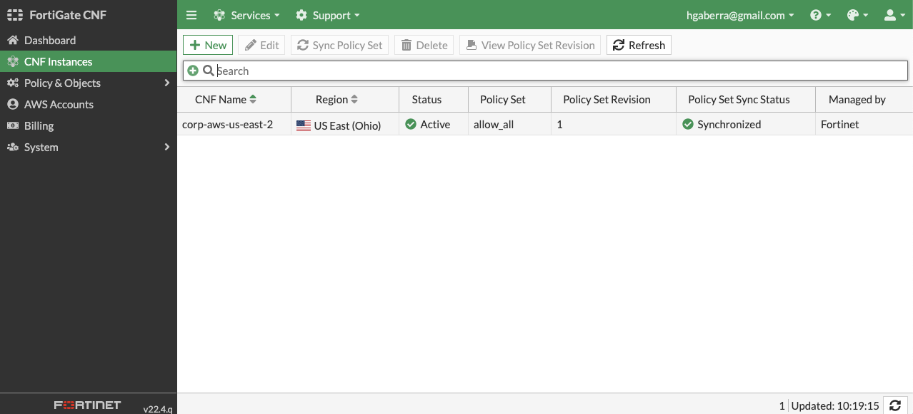
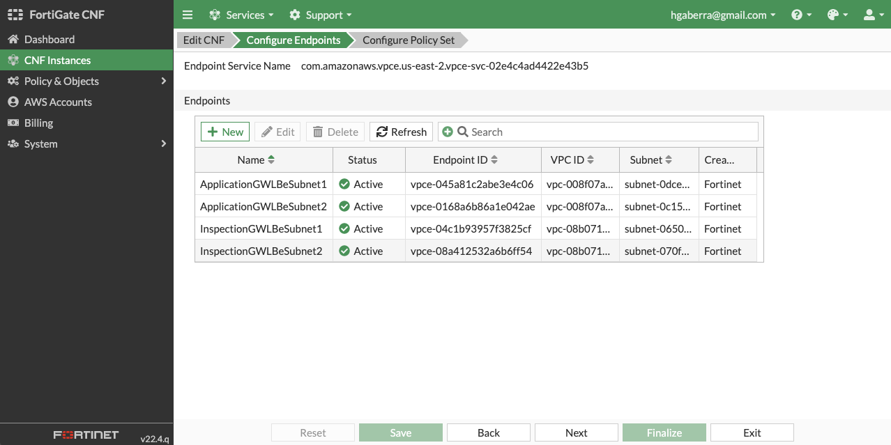
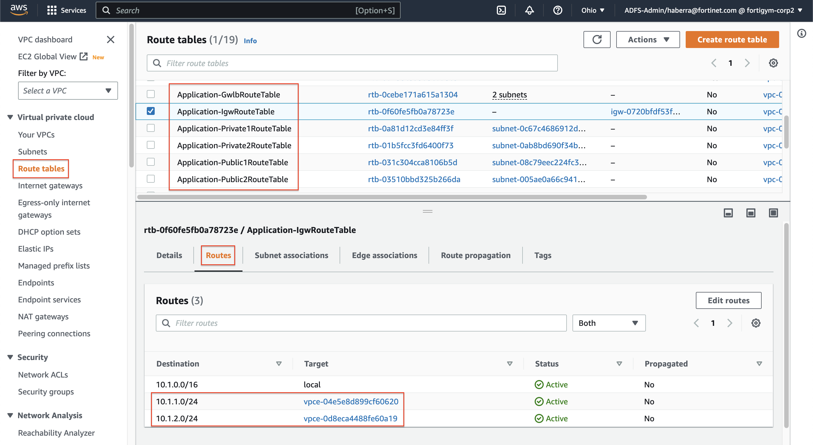

Task 3: Deploying CNF Instances and GWLBe endpoints
-
- In the FortiGate CNF console, navigate to CNF instances and click New.

-
- Provide a name for the CNF instance, select us-east-2 for the region for deployment, select Internal S3 for the log type, and select the S3 bucket created by CloudFormation for the logging destination. Then click Save. This will drop you back to the list of CNF instances while this is deployed in the background.
Note: FortiGate CNF is available in the following regions today. Based on customer demand, more regions will be supported in the future.
- us-east-1 (N. Virginia)
- us-east-2 (Ohio)
- us-west-1 (N. California)
- us-west-1 (Oregon)
- eu-central-1 (Frankfurt)
- eu-west-1 (Ireland)
- ap-northeast-1 (Tokyo)


-
- The CNF Instance should show up as active after roughly 10 minutes (Now is a great time for a break :) ). Then you can select and edit it to deploy endpoints and assign a policy set.


-
- On the Configure Endpoints section of the wizard, click the New button. Then you can select the account, VPC, then toggle the Select from all subnets to off (this filters the subnets to only show ones that are properly tagged), and the subnet to deploy the VPC endpoint to. Repeat this step for all subnets in the table below, then click the Next button. Once all have been created, click *Next.
| VPC | Subnet |
|---|---|
| Application-VPC | Application-GwlbeSubnet1 |
| Application-VPC | Application-GwlbeSubnet2 |
| Inspection-VPC | Inspection-GwlbeSubnet1 |
| Inspection-VPC | Inspection-GwlbeSubnet2 |
Note: In order for FortiGate CNF to successfully create a GWLBe in a subnet, the subnet must be properly tagged. The subnet needs a Tag Name = fortigatecnf_subnet_type and Tag Value = endpoint. Otherwise you will see an error that the subnet ID is invalid. The subnets below have already been tagged properly. In this example environment, the subnets above have already been properly tagged.



-
- On the Configure Policy Set section of the wizard, use the default ‘allow_all’ policy to allow all traffic from a Layer 4 perspective and click Finalize to push that default policy. You should then see the list of CNF instances again.


-
- To validate all GWLBe endpoints have been deployed and are active (takes ~5 mins), select and edit the CNF instance and click Next to view the GWLBe endpoints on the Configure Endpoints section of the wizard. Then click Exit to leave the CNF configuration wizard.

-
- Log into your AWS Account and navigate to the VPC Console > Endpoints. Each of the GWLBe endpoints you deployed in the FortiGate CNF Console should be visible in your account. Notice the tag name and value pairs assigned to the endpoints.

Note: At this point in a normal environment, you would need to create ingress and VPC routes to direct traffic to the GWLBe endpoints that were created by FortiGate CNF for inspection. However, for this workshop there is a Lambda function that is creating these routes for you to match the AWS Reference Architecture Diagram.
-
- To validate that the relevant VPC routes have been automatically created to route traffic to the GWLBe endpoints, in the AWS VPC console, navigate to Virtual Private Cloud > Route Tables, select each of the route tables listed below and confirm these routes exist in the route tab of the route table details pane.
| VPC Route Table | # Routes to GLWBe |
|---|---|
| Application-IgwRouteTable | 2x (one per public subnet), one per GWLBe (each AZ) |
| Application-Public1RouteTable | 1x (default route), GWLBe AZ1 |
| Application-Public2RouteTable | 1x (default route), GWLBe AZ2 |
| Inspection-Public1RouteTable | 1x (10.0.0.0/8 route), GWLBe AZ1 |
| Inspection-Public2RouteTable | 1x (10.0.0.0/8 route), GWLBe AZ2 |
| Inspection-TgwAttach1RouteTable | 1x (default route), GWLBe AZ1 |
| Inspection-TgwAttach2RouteTable | 1x (default route), GWLBe AZ2 |

-
- To confirm that app1 in the Application VPC is reachable, in the AWS CloudFormation console, toggle the view nested button to off > then select the stack name > and on the details pane select the outputs tab. You should see the output for URLforApp1. Click on the value for that output to check that App1 is reachable now. You should see a simple webpage with some metadata about the backend web server instance that is reachable via the public Network Load Balancer (NLB).


-
- This concludes this section.